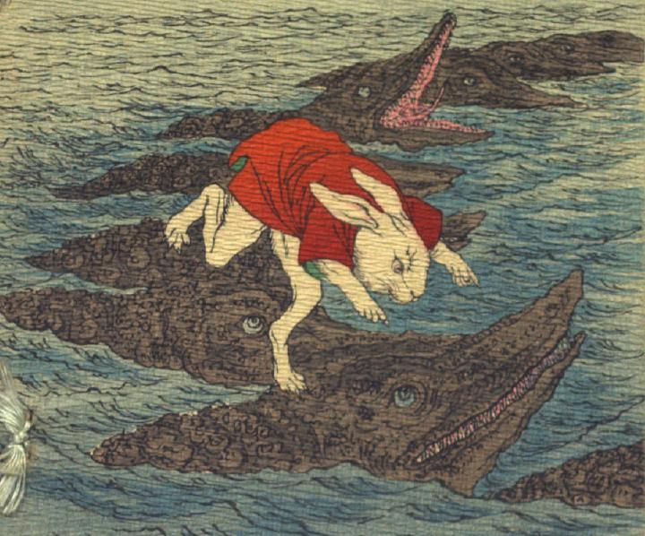

わにの背を渡っていく白兎。兎は赤い羽織をまとい、海の上に浮ぶわに達の背を跳んで渡っている。わには丸く青い目玉を持ち、鼻は無い。口は先が長く尖り、大きく裂け、鋭い歯がたくさん生えている。全身の肌は黒っぽく、ごつごつしている。わに達は海の上で列を作っている。兎が乗っているわには兎を見上げ、口先を上げている。画面奥手のわにの1体は、口を大きく開き、長い舌を伸ばしている。
著作者：J.Dautremer／出典：親書誌：U426_nichibunken_0103：Le lièvre d'Inaba／日付：2006／資源識別子：U426_nichibunken_0103_0001_0000
Copyright (c)2010- International Research Center for Japanese Studies, Kyoto, Japan. All rights reserved.